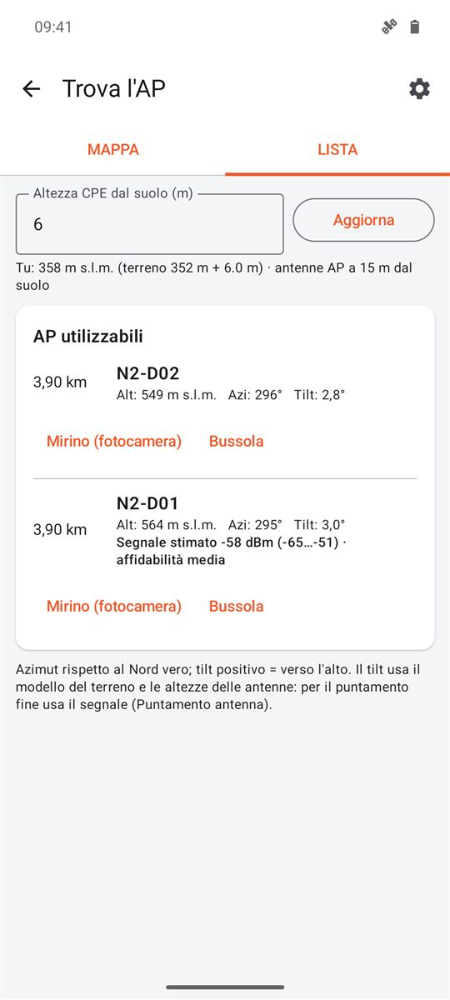
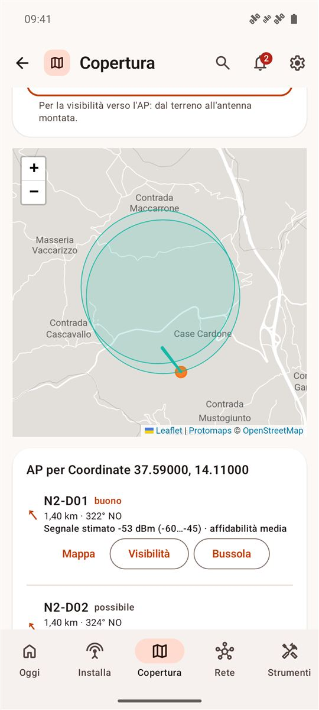
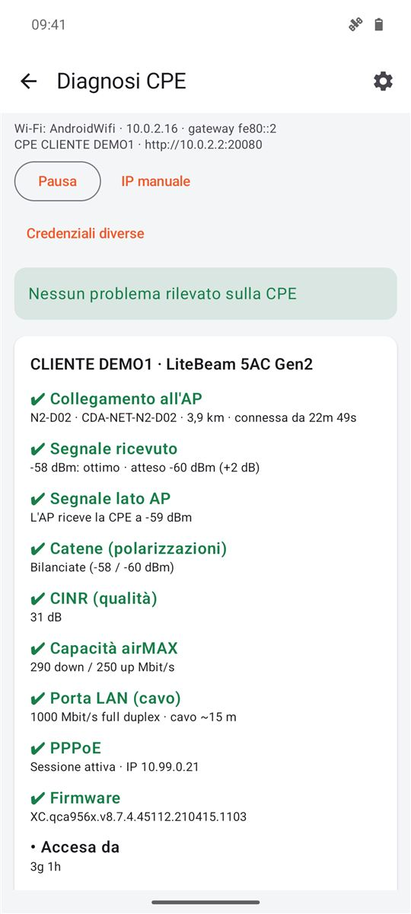
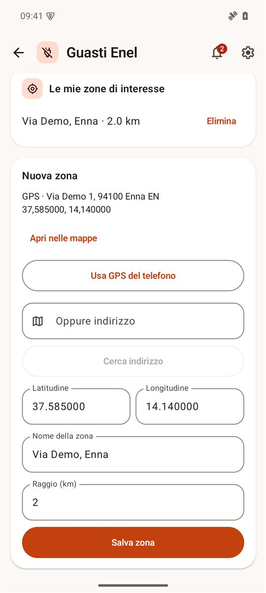
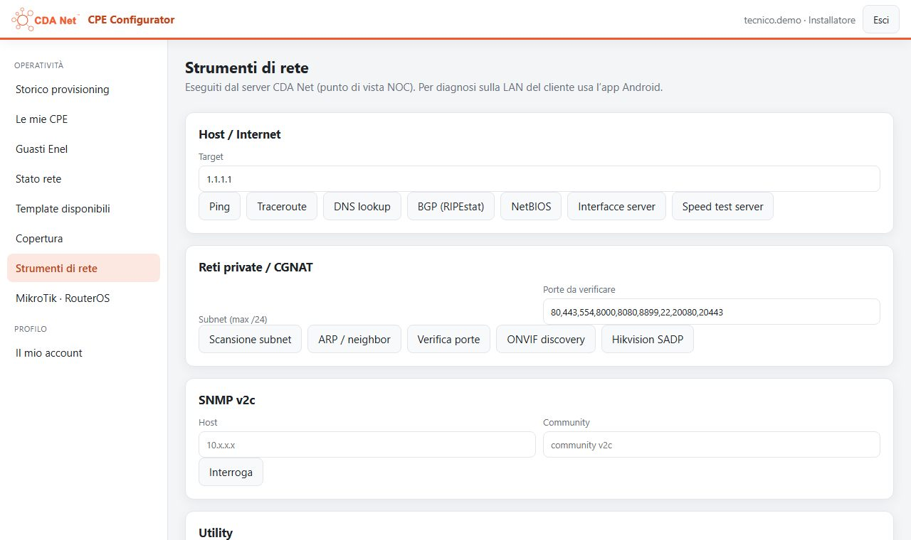

Guida installatore
Una nuova installazione dall'inizio alla fine con l'app CDA Net CPE, più tutti gli strumenti che usi in campo e in ufficio.
1. Prima di partire
- Telefono Android con l'app CDA Net CPE installata e aggiornata. L'app si aggiorna da sola: se c'è una versione nuova va installata prima di poter lavorare.
- Account installatore (utente e password) ricevuto dall'amministratore. Vedi solo le tue installazioni e i POP/AP che ti sono stati assegnati.
- Internet sul telefono per preparare la configurazione. Dopo, mentre lavori sulla CPE, Internet non serve più.
- La CPE nuova (o resettata), con l'etichetta di MAC e seriale leggibile, alimentatore PoE e cavo.
- I dati del cliente: utente e password PPPoE (RADIUS) e l'indirizzo dell'installazione.
2. Primo avvio e accesso
Al primo avvio Android chiede i permessi. Concedi posizione (serve per gli AP consigliati, la bussola e il mirino) e dispositivi nelle vicinanze (serve a leggere la Wi-Fi a cui sei collegato). La fotocamera viene chiesta la prima volta che apri il mirino o scatti le foto del collaudo.
Nella schermata di accesso controlla che sotto Server CDA Net compaia Online, poi inserisci utente e password e tocca Accedi. L'indirizzo del server è già impostato: cambialo solo se te lo chiede l'amministratore.


Accesso rapido con impronta o volto
Dopo il primo accesso con la password l'app propone l'accesso rapido: tocca Attiva e da quel momento al login basta impronta o volto. La password non viene salvata sul telefono. Serve un'impronta o il volto già registrato nelle impostazioni di sicurezza del telefono. Si disattiva da Impostazioni.
Aggiornamento obbligatorio
Quando il server pubblica una versione nuova dell'app, quella vecchia non permette più di accedere: compare Aggiornamento obbligatorio, il download parte da solo e viene verificato. La prima volta Android chiede di consentire l'installazione da questa origine: tocca Apri l'autorizzazione, attiva l'interruttore, torna indietro e tocca Ho autorizzato, installa.
Il tema chiaro o scuro segue quello del telefono.
3. La schermata principale
Dopo l'accesso trovi tutti gli strumenti come riquadri. In alto c'è quello che usi di più, Installazione CPE. L'ingranaggio in alto a destra apre le Impostazioni.


Questa guida si apre anche dall'app, dal riquadro Guida.
Se compare un avviso arancione in alto (per esempio collaudi in attesa di invio) non devi fare nulla: i dati partono da soli appena il telefono torna online.
4. Nuova installazione passo per passo
Simuliamo l'installazione di una LiteBeam 5AC per il cliente CLIENTE DEMO8, in Via Demo 1. Apri Installazione CPE e scegli Nuova installazione. In alto vedi sempre il passo in cui sei; con Termina chiudi l'intervento in qualsiasi momento.

| Passo | Cosa fai | Internet |
|---|---|---|
| 1 · Configurazione | Modello, MAC, posizione, AP, dati PPPoE; il server prepara la configurazione | Sì |
| 2 · Scrittura nella CPE | Ti colleghi alla Wi-Fi della CPE e l'app scrive la configurazione | No |
| 3 · Verifica della CPE | Controllo automatico di quanto scritto | No |
| 4 · Aggancio all'AP | Vedi gli AP che la CPE sente e scegli il migliore | No |
| 5 · Puntamento | Segnale in tempo reale, bip, mirino in realtà aumentata | No |
| 6 · Verifica finale e collaudo | Controlli, misure, test di velocità, foto e note | Per l'invio |
Passo 1 · Configurazione
- Modello: scegli il modello della CPE. Il Template si imposta da solo. Se compare "Nessun template airOS per …" quel modello non è ancora pronto: avvisa l'amministratore.
- MAC e Seriale: scrivili dall'etichetta oppure tocca Scansiona etichetta (barcode/QR). Sotto il campo vedi il MAC nel formato che verrà usato.
- Posizione CPE e AP consigliati: tocca Usa GPS del telefono stando nel punto dove monterai l'antenna, oppure cerca l'indirizzo. L'app propone gli AP consigliati da qui con distanza, direzione, tilt e segnale stimato; il primo è già scelto, con Usa ne prendi un altro.
- Wireless Station: nodo, distretto ed eventuale Rilancio si compilano dall'AP scelto; l'SSID risultante è del tipo
CDA-NET-N2-D01(con rilancioCDA-NET-N2-D01-R1). - Router / PPPoE: utente e password PPPoE del cliente. Dall'utente l'app ricava il nome del dispositivo (es. CLIENTE DEMO8). La password serve solo per questo provisioning e non viene salvata.
- Con Verifica piano vedi l'elenco di tutto quello che verrà scritto nella CPE. Poi tocca Prepara provisioning.


Passo 2 · Scrittura nella CPE
- Collega il telefono alla Wi-Fi di management della CPE (nome tipo
LBE-5AC-Gen2:xxxx, IP192.168.172.1). Se Android avvisa che la rete non ha Internet, scegli di restare connesso. Apri impostazioni Wi-Fi ti porta direttamente lì. - Tocca Rileva CPE per controllare che l'app la veda.
- Primo avvio airOS: se la CPE è nuova o resettata, apri l'interfaccia con Apri interfaccia CPE nell'app e completa il primo accesso: Country Licensed, accetta i termini, imposta le credenziali CDA Net.
- Applica alla CPE: l'app controlla firmware, modello e MAC, scrive la configurazione, la salva e riavvia la CPE. Ogni fase compare con una spunta. Al termine tocca Avanti: verifica della CPE.


Passo 3 · Verifica della CPE
Dopo il riavvio (1-2 minuti) l'app ritrova da sola la CPE sulla Wi-Fi a cui sei collegato e mostra nome, modello, firmware, MAC e SSID configurato, più i dati dell'installazione registrata sul server. Se non la trova, usa IP manuale; se la CPE non accetta le credenziali standard, Credenziali diverse (restano solo in memoria).

Passo 4 · Aggancio all'AP
Collegamento attuale mostra a quale AP è agganciata la CPE, con segnale, SNR e modulazione. Tocca Scansiona dalla CPE: è la radio della CPE, non il telefono, a cercare gli AP, quindi la lista è quella che conta davvero. Durante la scansione il collegamento può interrompersi per qualche secondo.
Gli AP CDA Net sono in cima; il migliore è segnato consigliato e, se è diverso da quello attuale, un avviso lo propone. Le altre reti (vicini, ponti radio) restano nascoste sotto Altre reti sentite.
Per cambiare AP tocca Aggancia: la CPE passa al nuovo SSID con la sua chiave WPA2 (arriva dal server, non devi conoscerla), salva e si riavvia. Con Blocca la CPE su questo AP la CPE resta su quell'AP anche se ne sente altri.


Passo 5 · Puntamento
Il numero grande è il segnale ricevuto dalla CPE, aggiornato di continuo, con il valore atteso calcolato dall'AP e il picco raggiunto. Il grafico mostra l'andamento: la linea verde tratteggiata è la soglia "buono", quella rossa il minimo accettabile. Con il bip attivo il tono sale quando il segnale migliora: ruota lentamente l'antenna in orizzontale, poi in verticale, e fermati sul picco.
Sotto trovi la direzione dell'AP (azimut, tilt, distanza) e i pulsanti per Mirino in realtà aumentata, Bussola verso l'AP, Mappa e lista degli AP e il Puntamento a schermo intero. Azzera picco e grafico ricomincia la misura.


Passo 6 · Verifica finale e collaudo
Il banner in alto dice subito se l'installazione è nei parametri. Sotto ci sono tutte le misure radio e i controlli con spunta verde, avviso arancione o errore rosso, ognuno con cosa fare.
Tocca Apri il collaudo:
- Misure radio: Avvia misura fa 10 letture in 10 secondi e ne fa la media.
- Internet dal lato cliente: collega il telefono alla Wi-Fi del router del cliente e tocca Misura Internet (velocità e ping verso il server CDA Net passano dalla nuova linea).
- Foto (fino a 8): antenna, staffa/palo, cablaggio, router del cliente, altro.
- Note per il NOC, facoltative.
- Salva e invia collaudo. L'esito (superato, con riserva, non superato) è calcolato con le soglie del NOC. Senza rete il collaudo resta in coda e parte da solo dopo.


Con Fine intervento hai finito. Il verbale di collaudo si stampa dalla console web.
5. Ripuntamento, cambio AP, sostituzione
CPE già installata: ripuntamento o cambio AP salta configurazione e scrittura: ti colleghi alla Wi-Fi della CPE o del router del cliente, l'app trova la CPE e riparti da Verifica della CPE. Se la CPE era stata installata con l'app, collaudo e foto finali si aggiungono a quell'installazione; altrimenti il collaudo si può condividere ma non salvare sul server.
Ci arrivi anche da Le mie CPE con il pulsante Ripuntamento su una CPE con segnale calato.
Sostituzione CPE (antenna guasta): dallo Storico apri l'installazione e tocca Sostituisci CPE. Parte una nuova installazione con i dati del cliente già compilati: inserisci il MAC della CPE nuova e prosegui come al passo 1.
6. Dopo l'installazione
Storico
Tutti i tuoi provisioning, con esito (Preparato, Completato, Fallito con il motivo) e collaudo. Da qui apri Storico segnale (7 giorni), Collaudo / foto e Sostituisci CPE.
Le mie CPE
Lo stato attuale delle CPE che hai installato, confrontato con il collaudo: offline, segnale debole, segnale calato (almeno 6 dB in meno rispetto al collaudo), porta LAN lenta. Puoi cercare per cliente, MAC, AP o SSID e filtrare. Tocca una CPE per i dettagli, lo storico di 7 giorni e il ripuntamento.


7. Strumenti di campo
Trova l'AP
Gli AP vicini sulla mappa (aree approssimative, con la linea di puntamento dalla tua posizione) e in lista con distanza, altitudine, azimut, tilt e segnale stimato. Imposta l'altezza della CPE dal suolo per un tilt più preciso. Da ogni AP apri Mirino (fotocamera) o Bussola. I ponti radio non compaiono: solo AP a cui si possono agganciare i clienti.


Copertura
Prima del sopralluogo: dal GPS o da un indirizzo vedi gli AP più vicini con mappa, distanza, direzione e segnale stimato dalle CPE già collegate in zona. Ogni AP ha Mappa e Bussola.
Puntamento antenna e Diagnosi CPE
Puntamento antenna è lo stesso strumento del passo 5, utilizzabile da solo. Diagnosi CPE serve per i guasti: collegato alla CPE (o al router del cliente) ti dice in rosso cosa non va (non agganciata, PPPoE non attivo, cavo LAN, firmware, riavvii frequenti) e con Condividi rapporto mandi il riepilogo al NOC.



8. Stato rete e guasti Enel
Stato rete
I POP e gli AP che ti sono assegnati, aggiornati ogni minuto: raggiungibili o no, AP con molte CPE offline (probabile problema di settore) e il simbolo ⚡ quando c'è un guasto Enel vicino. All'apertura vedi solo quelli con problemi; con Tutti li vedi tutti.
Guasti Enel
Le interruzioni della rete elettrica nelle tue zone: mappa e lista compatta (guasti in media tensione in rosso, bassa tensione in arancio, lavori programmati in grigio). Tocca una riga per i dettagli: ripristino previsto, POP/AP potenzialmente impattati, Sulla mappa (centra la mappa sul guasto) e Navigatore.
In alto attivi le notifiche sul telefono (anche ad app chiusa) e, se l'amministratore ha attivato il bot, le notifiche Telegram personali con Collega Telegram. In Le mie zone di interesse aggiungi fino a 20 zone (dal GPS o da indirizzo, con raggio in km).



9. Strumenti di rete
Funzionano anche senza accesso al server (Continua senza accesso), sulla rete a cui è collegato il telefono:
| Strumento | A cosa serve |
|---|---|
| Wi-Fi Analyzer | Reti, canali e segnale intorno a te, per scegliere il canale del router del cliente |
| Strumenti di rete | Stato connessione, ping, traceroute, DNS, speed test verso il server CDA Net |
| Scanner IP | Host attivi nella LAN: nome, produttore, tipo di apparato, porte principali; elenco o mappa di rete, esportazione CSV |
| Port scanner | Porte aperte su un host, con banner, header HTTP e certificati TLS |
| Diagnostica di rete | Ping continuo, MTU di percorso, DNS avanzato, prova HTTP, Wake-on-LAN |
| Discovery LAN | Apparati trovati con discovery Ubiquiti, NetBIOS, SNMP e ARP; da ogni apparato Apri web, Copia IP, Porte |
| SNMP v2c | Interroga un apparato in LAN |
| TVCC | Telecamere ONVIF e Hikvision (SADP), anteprima RTSP, calcolo della banda |
| MikroTik · RouterOS | Consultazione in sola lettura via SSH |
| Accesso remoto | SSH e Remote Desktop con app esterne |
10. Impostazioni
Dall'ingranaggio: il tuo account e la scadenza della sessione, Esci, Cambia password (almeno 12 caratteri), Accesso rapido con impronta o volto, Notifiche su Telegram, Esci da tutti i dispositivi (telefono perso) e l'indirizzo del server.


11. La console web
Dal computer apri l'indirizzo del server e accedi con lo stesso utente dell'app. La configurazione delle CPE si fa solo dall'app; la console serve per consultare, esportare e stampare.
| Voce | Cosa trovi |
|---|---|
| Storico provisioning | I tuoi provisioning con ricerca, filtri per esito e date, esportazione CSV; apri il collaudo e stampa il verbale |
| Le mie CPE | Stato delle tue CPE rispetto al collaudo, con filtri, ricerca, storico ed esportazione CSV |
| Guasti Enel | Riepilogo, mappa e lista dei guasti nelle tue zone; gestione delle zone di interesse e di Telegram |
| Stato rete | I tuoi POP e AP: in funzione, non raggiungibili, molte CPE offline, guasto Enel vicino |
| Template disponibili | I modelli di CPE pronti per l'installazione |
| Copertura | AP più vicini a un indirizzo o a coordinate, con mappa e segnale stimato |
| Strumenti di rete | Ping, traceroute, DNS, scansioni eseguite dal server (punto di vista NOC) |
| MikroTik · RouterOS | Consultazione in sola lettura |
| Il mio account | Password, verifica in due passaggi, sessioni, Telegram |




12. Problemi frequenti
| Problema | Cosa fare |
|---|---|
| Al login: "Aggiornamento obbligatorio" | Lascia scaricare l'aggiornamento e installalo: senza, l'app non permette di accedere. |
| Server non "Online" | Controlla la connessione dati o Wi-Fi; se sei sulla Wi-Fi della CPE il server non è raggiungibile, è normale. |
| "Nessun template airOS per …" | Quel modello non è ancora configurato: avvisa l'amministratore. |
| Pacchetto scaduto | Sono passati più di 30 minuti: torna online e rifai Prepara provisioning. |
| "Nessuna CPE airOS trovata" | Controlla di essere sulla Wi-Fi della CPE (o del router del cliente) e di essere rimasto connesso anche senza Internet; prova IP manuale. |
| "Autenticazione SSH rifiutata" | Il primo avvio airOS non è completo: aprilo dall'app, completalo e riprova con lo stesso pacchetto. |
| La CPE rifiuta le credenziali | La CPE non usa le credenziali CDA Net (configurata a mano o non provisionata): usa Credenziali diverse. |
| Segnale sotto −75 dBm | Rivedi il puntamento, cerca ostacoli, prova un altro AP dalla scansione della CPE o alza l'antenna. |
| Catene sbilanciate (oltre 6 dB) | Possibile ostacolo o riflessione, oppure antenna non allineata in elevazione: correggi il tilt. |
| Porta LAN a 100 Mbit/s o half duplex | Cavo o connettore danneggiato: rifai i plug o cambia cavo. |
| PPPoE non attivo | Controlla utente e password PPPoE o lo stato dell'abbonamento con l'ufficio. |
| Collaudo in attesa di invio | Nessuna azione: parte da solo appena c'è rete. |
13. Glossario
| CPE | L'antenna sul tetto del cliente. |
| AP | L'antenna del POP a cui si collegano le CPE di una zona. |
| POP | Il sito (traliccio) con uno o più AP. |
| Distretto, nodo, rilancio | Compongono l'SSID dell'AP: CDA-NET-N<nodo>-D<distretto>, con -R<n> per un AP di rilancio. |
| dBm | Potenza del segnale: più vicino a zero è meglio (−58 è meglio di −70). |
| SNR / CINR | Quanto il segnale supera rumore e interferenze, in dB: più alto è meglio. |
| Catene | Le due polarizzazioni dell'antenna: devono ricevere valori simili. |
| Azimut / tilt | Direzione orizzontale (0° = nord) e inclinazione verticale verso l'AP. |
| PPPoE | L'accesso a Internet del cliente, con utente e password RADIUS. |
| Collaudo | Le misure finali, foto e note che certificano l'installazione. |